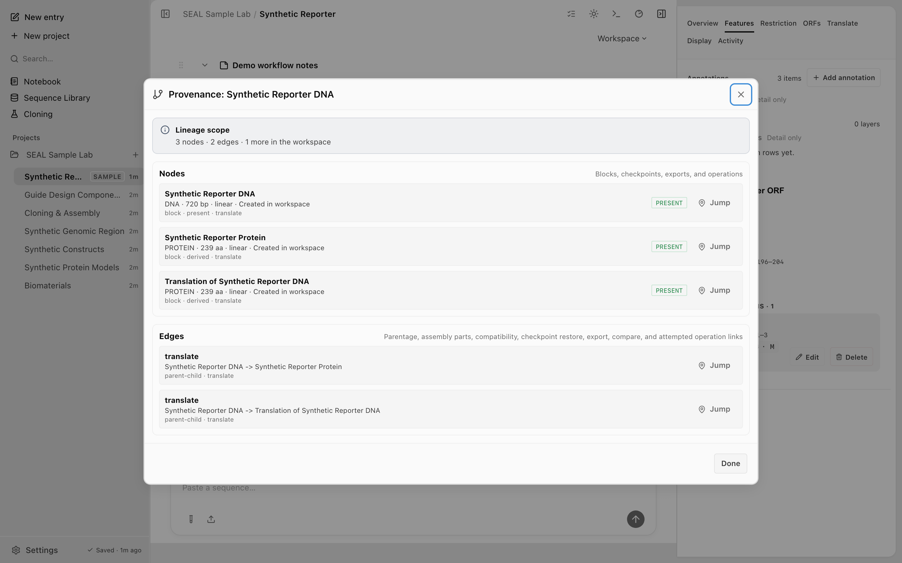

Core concepts
Screenshots and recordings show the direct edition. Compare editions.
One workspace holds your data. The app calls each working record an Entry; projects can group Entries, Entries contain ordered sequence blocks, and blocks carry features. The CLI and MCP retain the underlying conversation term for an Entry so existing automation contracts stay stable.
The workspace hierarchy
The workspace
State lives in one SQLite database on your machine. The desktop app, the CLI, and the MCP server all open the same file, so there is no separate copy to sync. Commands that read or write shared data resolve the database path in this order:
SEAL_DB_PATHif set. An absolute path is recommended; a relative path is resolved against the current directory.- A repo-local
.seal/seal.dbin the nearest parent directory that containspackage.jsonor.git. - The platform application-data directory, such as
~/Library/Application Support/io.github.jvogan.seal/seal.dbon macOS.
Set SEAL_DB_PATH to a scratch file to isolate agent or test work from your live workspace. See Architecture for how the surfaces share this file.

Entries and projects
An Entry is a working set of sequences. It holds an ordered list of blocks and is where most work happens. The CLI and MCP name this record type conversation. Use Archive and Restore in the app rather than assuming permanent deletion is available through every automation surface.
seal conversations create "CRISPR experiment 1"A project is an optional grouping above Entries. Assign an Entry to a project, or leave it unassigned. Deleting a project clears that assignment rather than deleting its Entries.
seal projects create "CRISPR campaign"
seal conversations move "CRISPR experiment 1" --project-id proj-abcBlocks
A block is the unit that holds one sequence. Every sequence you import, fetch, paste, or compute becomes a block. A block carries its raw sequence, a type, a topology, its features, and any checkpoints taken of it.
Materialized sequences
The analysis commands are stateless: they print a result and stop. To keep a computed sequence (a translation, a digest fragment, a PCR amplicon, an assembled construct) you materialize it as a block with the blocks add command. This is the bridge from the stateless commands into the workspace: pipe their output in. The blocks add, blocks translate, and blocks link-parts workflow commands, and translate --from-atg, run through the TypeScript CLI, invoked with npm run dev:cli -- <command>. The shipped Rust seal provides blocks reorder, blocks extract-selection, and blocks annotate-selection.
npm run dev:cli -- translate synthetic-reporter.fa --from-atg | npm run dev:cli -- blocks add --type protein --name "Synthetic reporter translation"Nesting
A block can be the parent of another block. Setting --parent makes the new block a nested child that inherits the parent's conversation. The common case is a translated protein nested under its coding sequence. blocks translate does this in one step: it translates a CDS block and adds the protein as a nested child, stripping the trailing stop codon for a complete CDS.
npm run dev:cli -- blocks translate --block synthetic-reporter --from-atgAssembly lineage
A construct assembled from several parts cannot be described by a single parent. blocks link-parts records the lineage instead: it writes the edge that lets the desktop app show "assembled from N source blocks" and stamps how the construct was made. Pair it with blocks add to materialize the construct and the stateless gibson or golden-gate commands for the assembly math.
npm run dev:cli -- blocks link-parts --construct final --parts insert,vector --manipulation gibson_assembly
Features and annotations
A feature is an annotation on a range of a block, such as a gene, a CDS, or a promoter. Each feature has a type, a name, and a start and end position. Add, update, list, and delete features on any block.
seal features add --block block-id-abc \
--feature-json '{"type":"gene","name":"synthetic_reporter","start":0,"end":720}'Positions are 0-indexed: start is inclusive, end is exclusive. On a linear block, start must be at or before end. On a circular block, a feature may wrap (start greater than end). To annotate a selection by range, use seal blocks annotate-selection, which takes the same range flags. SEAL also ships built-in feature templates for common parts (reporters, tags, promoters, recombination sites) so you can apply a known feature without typing its coordinates.
Sequence types and topology
Most blocks have a type of dna, rna, or protein, auto-detected on input and overridable with --type (for example, to force protein). Content you add as Unknown stays an untyped misc block, which reads its length in generic characters and hides the type-specific tabs.
DNA and RNA blocks also have a topology, either linear or circular. Topology is not cosmetic: it changes how analysis treats the ends of the sequence. A circular plasmid digested with a single-cutter yields one full-length fragment, and features on a circular block may wrap past the origin. Pass --topology circular when a sequence is a plasmid or other closed molecule.
Checkpoints and the Activity trail
A checkpoint is a saved snapshot of a block: its sequence, topology, type, features, and scars. Save one before a risky edit, then restore it later. Restore is transactional, so a block is never left half-updated. You can also diff two checkpoints of the same block.
seal checkpoints save --block "Synthetic Reporter DNA" --label "before BamHI digest"
seal checkpoints list --block "Synthetic Reporter DNA"
seal checkpoints restore --block "Synthetic Reporter DNA" --checkpoint-id cp-abcThe Activity trail records every workspace write and its source: the desktop app, CLI, or an external agent over MCP. Agent and desktop writes use the same record format, including the affected block and a checkpoint when one exists. See the agent control plane for external-agent setup.
Some Activity rows are informational events or durable tombstones with no checkpoint to restore. A recovery action appears only when a checkpoint exists for that change.
Mutation history
Undo and redo are persisted. The mutation history for each block survives an app restart, so you can reopen the workspace and step back through recent edits. History is capped at the most recent 100 operations per stack. This is separate from checkpoints: mutation history is the per-block undo and redo stack for the active block, while a checkpoint is an explicit, labeled snapshot of a single block that you save and restore on purpose.
Next steps
- Editing and annotation: edit bases, add features, and annotate selections on a block.
- Quickstart: put these concepts to work in a few minutes.